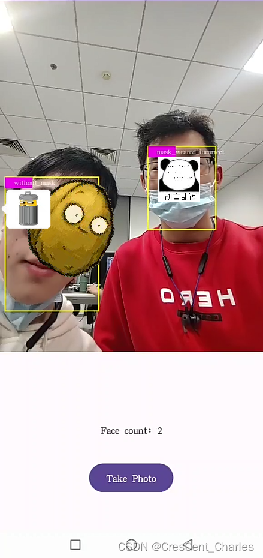
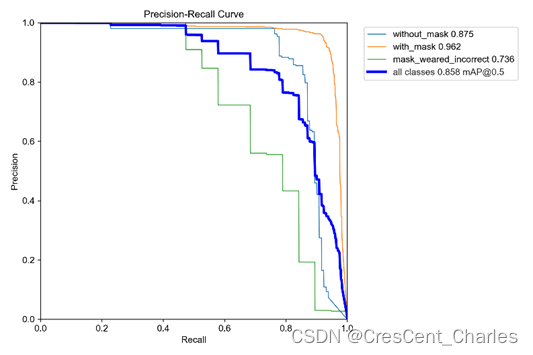
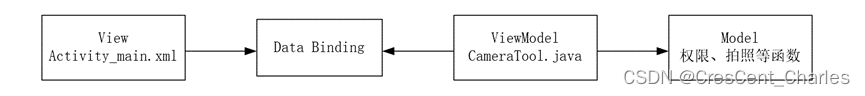
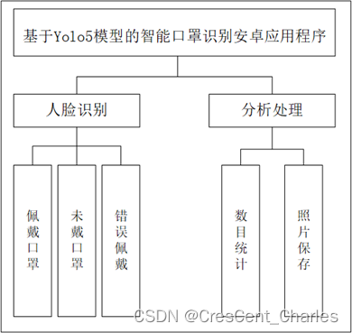
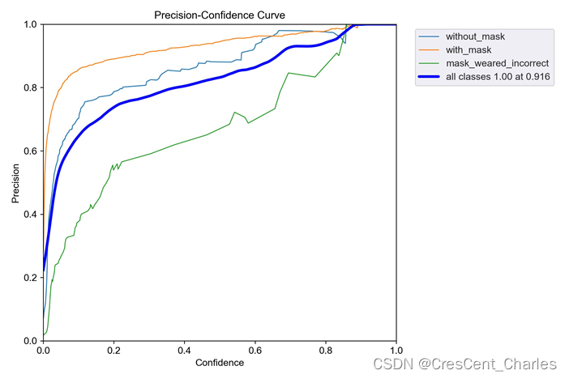
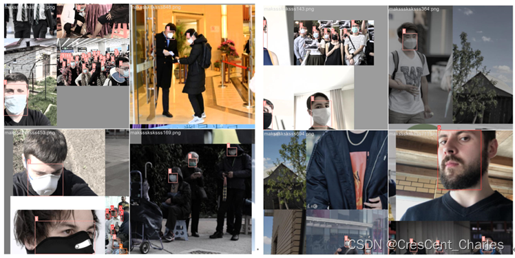

基于Yolo5模型的动态口罩佩戴识别安卓Android程序设计
禁止完全抄袭，引用注明出处。
下载地址
前排提醒：文件还没过CSDN审核，GitHub也没上传完毕，目前只有模型的.pt文件可以下载。我会尽快更新。
所使用.ptl文件
基于Yolo5的动态口罩佩戴识别模型的pt文件资源-CSDN文库
项目完整文件（还未更新完）
BFU-CS/MaskRecognition at main · CCCP-lus/BFU-CS (github.com)
程序演示

开发环境
项目使用的开发环境：Android Studio Giraffe | 2022.3.1 Patch 2、Kotlin 1.9.20、 JDK1.8、cameraX 1.0.0-beta07、 pytorch 2.1.0
设计思路
（1）需求分析
无论是新冠等全球传染病，还是一直蛰伏在身边的换季流感，都是人类健康的威胁因素。佩戴口罩可以有效阻断传染途径，是公共场所传染病防治最简洁有效的手段。针对以上需求，开发一款基于Yolo5的智能口罩识别安卓应用程序。
其主要实现三个任务：A.保存照片 B.实时显示人脸个数 C.识别人脸并判定口罩佩戴情况
（2）模型训练
①数据集：Kaggle上的口罩照片数据集[1]，其中包含了853张进行过预打标的图片，包括戴口罩、未戴口罩、未正确戴口罩三类样本。
②训练模型：采用yolov5s模型[2]，epoch值为300，batch-size取4。使用一张RTX4060显卡重复训练四次，得到的最优准确率和召回曲线如下图所示。

图1 模型训练的准确率与召回曲线
（3）架构设计
如下图所示，项目采用了MVVM架构。

图2 架构示意图
布局（View）文件包括资源包 layout 文件夹下放置的布局配置文件： activity_main.xml 与 texture_view.xml，它们定义了主活动的界面。然后再通过 data binding 和 ViewModel 对象 CameraTool.java 进行绑定，以实现拍照功能为例，负责绑定的相关代码如下。
1 | //正向绑定 |
Model 部分包括获取相机权限、图片处理、拍照等活动。这样就实现了一个 MVVM 架构，它的特点是以数据为中心，由数据来驱动，ViewModel 帮助 Activity 分担一部分或者所有的工作，可以降低代码之间的耦合度。
项目的功能结构如下图所示。该项目的主要功能为实现屏幕中人脸识别并按照口罩佩戴情况的分类功能。在界面中用户可以实时查看到识别到的人脸位置、分类结果、数量统计，也可以点击拍照按钮抓拍照片。

图3 功能结构图
模型训练
我的过程还在整理，这篇就写的很好，可以先参照下。但是使用的数据集不一样，所以结果、性能等也不一定一样，请读者知悉。
利用yolov5实现口罩佩戴检测算法(非常详细)_基于yolov5的口罩识别-CSDN博客
程序编写
（1）代码结构分析
资源文件
资源包 assets 文件夹下放置一些静态资源，包括用于保存和加载完整的 PyTorch 模型结构和参数等信息的 best.torchscript.ptl 文件，以及存放此模型对应类别标签的 classes.txt 文件。
布局文件
资源包 layout 文件夹下放置布局配置文件 activity_main.xml 与 texture_view.xml，它们定义了主活动的界面。
任务A
A任务中，点击按钮存储照片的功能是在上述功能的基础上，定义了一个按钮侦听器负责调用拍照函数。该函数通过调用 CameraX 库中的方法拍照，并传入 OutputFileOptions 对象、执行器对象和回调函数。在回调函数中显示 Toast 提示用户文件成功保存。
任务B
B任务中，计算并输出检测到的⼈脸的个数功能是模型运算结果的中间产物，通过调取将模型输出 outputs 转换而成的结果列表 Array，求其长度即可得到检测到的⼈脸个数。
任务C
C任务的主要目标可以简化为在拍摄过程中寻找人脸，并根据人脸的面部特征进行分类。这个过程可以大致分为三步：
首先程序会判断权限是否已经获得，如果已经获得就会启动相机。相机启动后会捕获图像用于后续操作（分析、保存等）。
然后，需要对原始数据进行处理。通过创建 ImageAnalysis 实例的方式，完成包括旋转角度、镜像等操作，其目的是让在屏幕上显示的照片符合人眼观看方向。
最后模型返回一个 Result 类型的结果数组，包括每个矩形的位置，类别和属于这个类别的概率。通过调用分析图像方法将分析结果应用于UI线程，这个过程的更新间隔非常短，使用户可以视觉上认为这是实时分析的结果。
（2）测试结果
模型准确度测试
更换新的数据集Object_Dete_Masking[3]，充分模拟了视角变化、遮挡物、多目标等不同情境。再次进行预测，准确率曲线和部分测试结果如下图所示。这个结果表示有充分理由认为模型的训练结果是可以接受的。

图4 新数据集测试结果

图5 新数据集测试结果（部分）
模型鲁棒性测试
针对连续按键、过量目标等非正常情况进行了程序的鲁棒性测试。测试结果发现，系统能够在各种复杂环境下保持稳定的性能，并且对于异常输入和各种干扰情况都有较好的处理能力。可以认为鲁棒性测试通过。
存在问题
口罩佩戴不正确的训练样本过少，导致这种临界情况不能被有效识别。后续可以通过增大这部分样本重新训练的方式解决此问题。另外模型有时会将中景里模糊的白色物体（测试中是一个路由器）识别为口罩从而造成误判。后续可以通过增加训练样本、减小敏感度参数的方式解决此问题。
参考文献
[1] Face Mask Detection[OL].2020.https://www.kaggle.com/datasets/andrewmvd/face-mask-detection
[2] Glenn Jocher: yolov5: v3.1 - Bug Fixes and Performance Improvements[J].2020.10. Zenodo
[3] Object_Dete_Masking[OL].2020.https://github.com/huzixuan1/Object_Dete_Masking
 支付宝打赏
支付宝打赏
 微信打赏
微信打赏
如果觉得好用请支持我